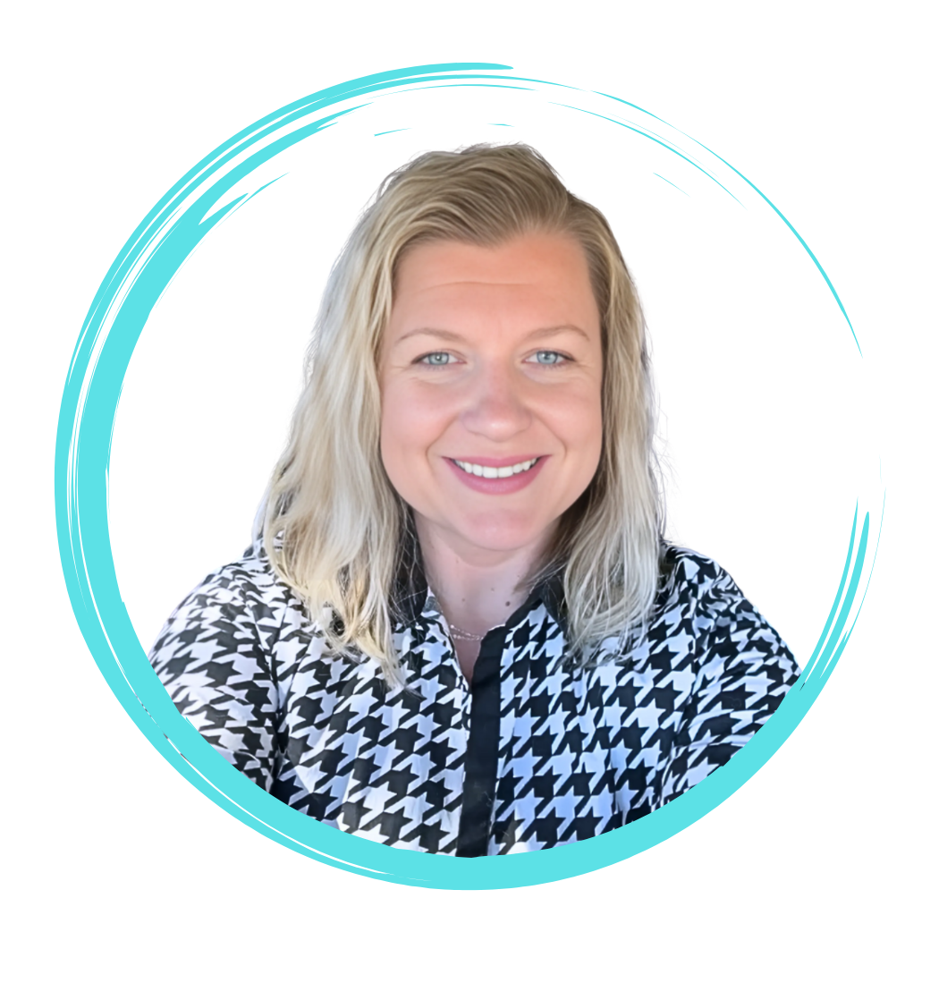

Learning Enablement · Security & Technical Upskilling · Enterprise Strategy
I design the frameworks that transform what teams know into what they can do—delivering measurable results at scale without sacrificing the learner experience.
Technical LXD · Lead PM · Content Architect
I work backward from the goal, move fast, and iterate in real time—building learning strategies that drive impact now and scale from there.
I’m a Learning Architect and Lead Program Manager who blends business logic with educational design to solve capability gaps at the root.
I’m especially energized by AI’s practical potential in learning, strong systems design, and experiences that help people actually apply what they’ve learned after training is over.
“Common sense over excessive complexity.” — Me, the professional GSD-er
These are the patterns behind my best work: start with the destination, dig under the surface, keep strategy tied to real business goals, and build systems that scale without losing clarity.
I do not start with content. I start with the decision, capability, behavior, or business risk that needs to change. Once the destination is clear, the design gets sharper, faster, and more useful.
If people are missing the mark, I want to know why. I look for root cause process friction, knowledge gaps, incentives, tool confusion, and role ambiguity so the solution addresses the real problem instead of the loudest symptom.
Learning strategy has to support the end goal, whether that is stronger readiness, lower risk, faster onboarding, cleaner audit performance, or internal mobility. I build measurement in from the start.
I think in repeatable structures—pathways, templates, governance, content libraries, knowledge hubs, and release rhythms. That is how teams stop reinventing the wheel and start building capability that lasts.
From enterprise-scale security compliance to youth-focused microlearning, this is the impact the work produced in the real world.
Learners reached through annual security policy training across corporate and retail, localized into 14 languages.
Documented gains in security, privacy, and TPM skills through assessments and scenario-based validations.
Role-based pathways built across security and technical programs, each combining coursework, mentoring, and capstones.
Built third-party enablement from zero and helped standardize findings language to reduce audit cycle time.
Created a reusable executive enablement library, coded the wiki hub, and reduced build time with templates.
Designed and launched a mobile-first digital library for at-risk teens in foster care across Georgia.
Global Security Enablement · Amazon
I helped evolve a large-scale compliance requirement into a more structured enablement system with stronger governance, more consistent learner experience, and better visibility into risk patterns.
My role sat at the intersection of strategy, design, and operations: localization at scale, Cornerstone to Amazon Learn transition support, Whole Foods adaptation, and targeted awareness campaigns based on audit and repeat-violation patterns.

Security Career Pathways · Amazon SETA
The gap was clear: people wanted to move into more technical security roles, but there was no structured path that showed what to learn, how to progress, and what readiness actually looked like.
I designed the pathway architecture, mapped competencies to NIST, NICE, and SANS, and built the learning journey around real movement—coursework, shadowing, mentoring, scenario-based capstones, and operational support materials.

Advantage Experience · Amazon
Advantage Experience was an internal professional development initiative for roughly 8,000 senior employees, created to address gaps in performance management, inclusive leadership, and AI fluency.
I helped turn that need into something real and usable: a branded program, coded wiki hub, reusable learning assets, feedback loops, and stronger alignment to Leadership Principles and annual performance conversations.
VISA Assessor Enablement · Amazon
Built a new enablement program to prepare third-party assessors across partner sites for more consistent audit execution, shared terminology, and standardized findings communication.
The end result was a more unified enablement engine that moved teams from subjective opinions to standardized findings.
Empowering At-Risk Youth · Lifebridge Academy
Built a mobile-first digital learning library for at-risk teens in foster care across Georgia, with interactive lessons that ended in practical action—not just awareness.
Remote Communication Strategy
Used interviews and action mapping to identify root-cause communication breakdowns in distributed teams, then translated those findings into a targeted eLearning solution.
Graduate Work
Graduate work that strengthened my foundation in learning strategy, UX thinking, instructional systems, and evidence-based design decisions.
The throughline in my work is not just design. It is the ability to connect business context, technical complexity, and learning execution in a way that people trust.
I thrive on understanding the why behind every challenge before I touch the solution. My best work happens when I can connect business needs, technical realities, and human behavior into one system that actually makes sense.
I’m especially energized by AI, learning technology, and experiences that feel both strategic and intuitive. I like turning complexity into clarity—whether that shows up as a pathway, a content ecosystem, a wiki, or a better way for people to learn on the job.
I also care about the visual layer. Good design earns attention, builds trust, and helps ideas stick, which is why I often end up owning both the architecture and the experience around it.
"The way to get started is to quit talking and begin doing."
— WALT DISNEY
Outside of work
Outside work, I’m usually with my three kids and Saint Bernard, traveling, in the mountains, or building and fixing something at home.

“Nikki selflessly devotes her time and talent to not only meet but often exceed our quarterly goals.”
It is my honor to write this testimonial for Nikki Rosenvald. As a dedicated member of our Lifebridge Design Team, Nikki has been a critical contributor to our youth learning library—designing, developing, implementing, and managing instructional content, courses, and projects within our online learning platform.
Nikki is a team player who collaborates well, keeps leadership informed, and produces high-quality, engaging content. I am confident she will be a valued asset in any capacity and am happy to recommend her.
Senior Learning Enablement, Learning Architect, or Lead Program Manager roles—remote or hybrid.
Select contract or consulting engagements in curriculum strategy, pathway design, LMS governance, knowledge hubs, or security awareness.
Most recent Amazon work is confidential by policy. I can walk through architecture, design decisions, and outcomes live.
If you need someone who can connect strategy, execution, technical context, and polished learner experience, I’d love to hear what you’re building.